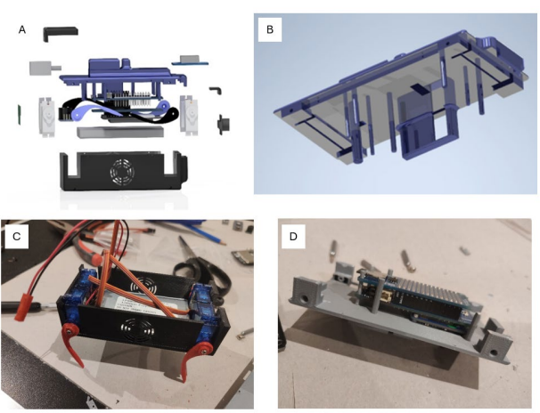
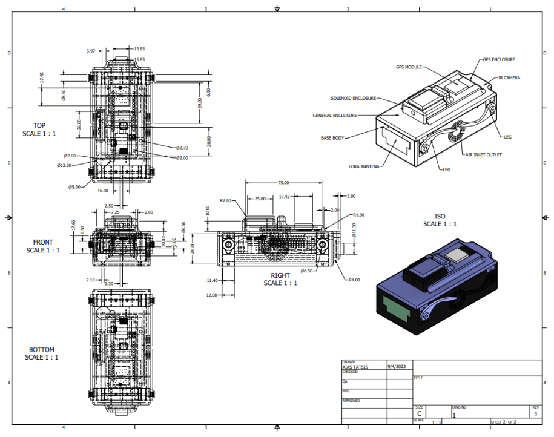

Overview
Developed the first-ever rectangular CanSat for ESA's CanSat competition in Greece. Unlike traditional cylindrical designs, our rectangular form factor enabled the satellite to land and transition into an autonomous ground vehicle, capable of measuring atmospheric and radiation conditions on the ground.
Technical Details
- Novel Form Factor: Designed a rectangular satellite body that doubles as a ground vehicle chassis after landing, a first in the competition's history.
- Autonomous Ground Vehicle: After parachute deployment and landing, the CanSat drives autonomously to collect ground-level measurements.
- Sensor Suite: Measured atmospheric pressure, temperature, humidity, and radiation conditions during descent and on the ground.
- Software: Developed the full flight and ground control software, including autonomous navigation logic.
Awards
- 2nd Place, CanSat in Greece 2022 — National Astronomy, Rocketry & STEM Competition